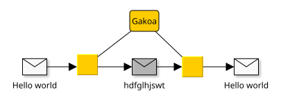
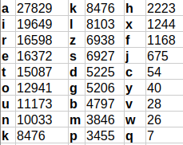
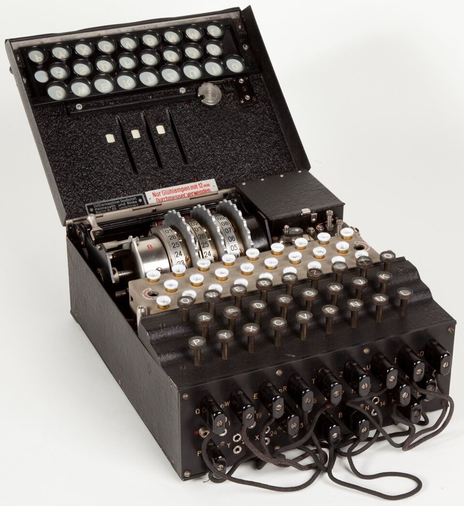
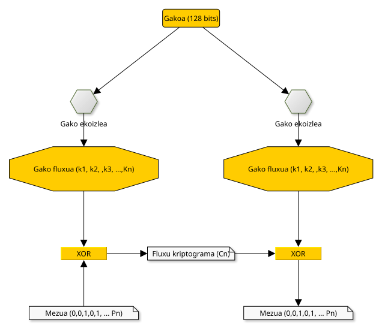

Zifraketa simetrikoa
Mikel Egaña Aranguren
mikel-egana-aranguren.github.io

Mikel Egaña Aranguren
Mikel Egaña Aranguren
mikel-egana-aranguren.github.io
https://doi.org/10.5281/zenodo.4302267
https://github.com/mikel-egana-aranguren/EHU-ISSKS-31

Gako pribatua (simetrikoak), gako publikoa (asimetrikoak)
Monoalfabetikoak, polialfabetikoak
Ordezkapena, transposizioa
Fluxu-zifraketa, Bloke-zifraketa

Zifraketa algoritmo oso zaharra
Ordezkapen monoalfabetikoa
Mezuaren letra bakoitza alfabetoan posizio finko bat desplazatu: N=3, A->C

Ezezaguna den zifraketa-gakoa aurkitzea: zifratutako testuak deszifratzea
Zifraketa-algoritmoan ahuleziak aurkitzea, gakoa gabe zifratutako testua deszifratzeko
Gako posible guztiak probatzea, zentzua duen testu deszifratua aurkitu arte
Zifraketa-algoritmoa eta gako-espazioa ezagutu behar dira (¿Zesar-en gako-espazioa? -Laborategia-)
Kostu konputazional handia (¿Konputazio kuantikoa?)
Gako-espazioa murriztu, gako batzuen probabilitatea handituz
Jatorrizko mezuaren letra bakoitza berrantolatutako alfabeto bateko beste letra batez ordezkatzen da

Monoalfabetikoa
¿Gako-espazioa?
Gako-espazioa murriztu, gako batzuen probabilitatea handituz: maiztasunen analisiaren bidezko eraso estatistikoa
Monoalfabetikoa: jatorrizko letra bakoitza beti ordezkatzen da letra berarekin
Hizkuntza bakoitzeko karaktere maiztasun handienak dakizkigu
Hizkuntza bakoitzeko maiztasun handieneko bi/hiru/lau karaktereko hitzak (bigramak, trigramak eta tetragramak) dakizkigu
"Probatu" eta ondorioztatu egiten da
Zifratutako testua zenbat eta luzeagoa, orduan eta hobea
Jatorrizko testuaren hizkuntza jakin behar da
Euskarazko karaktereen agerpen-portzentaia

Nola zaildu maiztasunen analisiaren erasoa?
1-1 korrespondentzia ekidin, karaktere bera behin baino gehiagotan erabiliz (Sistema polialfabetikoak)
Polialfabetikoa
.png)
Gako-espazioa: 25!
Bigramen gaineko maiztasunen analisia
Bigarren Mundu Gerran alemanek gehien erabiltzen zuten zifraketa elektromekanikoko gailua
Gakoa: errotoreen konfigurazioa

Alan Turing kriptoanalista nagusia: Enigma-ren konfigurazio posibleak automatikoki bilatzeko diseinatutako makina elektromekanikoa (Bomba). Gerraren irabazpenean funtsezkoa
Turing funtsezkoa informatikan: Turing-en makinak, konputazio-algoritmoak, adimen artifiziala, ... ???
Turing 1954an bere buruaz beste egin zuen, jazarpen homofoboagatik. Apple-ren ikonoa, UK gobernua
Testua baino bit-ak zifratzen dituzte
Fluxu-zifraketa (Stream cipher): bit-fluxu jarraia zifratzea
Bloke-zifraketa (Block cipher): mezua tamaina bereko blokeetan banatu eta algoritmoa bloke bakoitzari aplikatu
Bit-fluxua bit bakoitzeko zifratzen dute
Denbora errealean komunikazioetarako erabiltzen da (Ezin da mezu osoa espero zifraketa eta transmisiorako)
Gakotik abiatuta, pseudoausazko sortzailea erabiltzen da, gako-fluxua sortzeko (deterministikoki, baina ausazkoa dirudien moduan), mezuaren tamaina berekoa
Mezuaren eta gako-fluxuaren bit bakoitzaren arteko XOR eragiketak kriptograma sortzen du

Itzulgaia
Ez du informaziorik galtzen
Oso eraginkorra
Gako ausazkoa, irteera ausazkoa dirudi
One time pad erresistentzia handikoa: C = P XOR K (K guztiz ausazkoa, mezuaren luzera bera, behin bakarrik erabilia)
Ez erabili gako bera mezu anitz zifratzeko
Gako-fluxua = F(gakoa, nonce)
1995-2015 (TLS/SSL, WEP)
2008 (IETF, Google, etab.)
https://tools.ietf.org/html/rfc7539
TLS, OpenSSH, HTTP/3
Jatorrizko mezua tamaina finkoko blokeetan banatu
Jatorrizko mezu-bloke bakoitzak zifratutako mezu-bloke bat sortzen du
Iterazioak, permutazioak eta bloke desberdinen arteko eragiketak gehi daitezke
Akatsen hedapena (!Fluxu-zifraketa)
Padding
{kind=link}